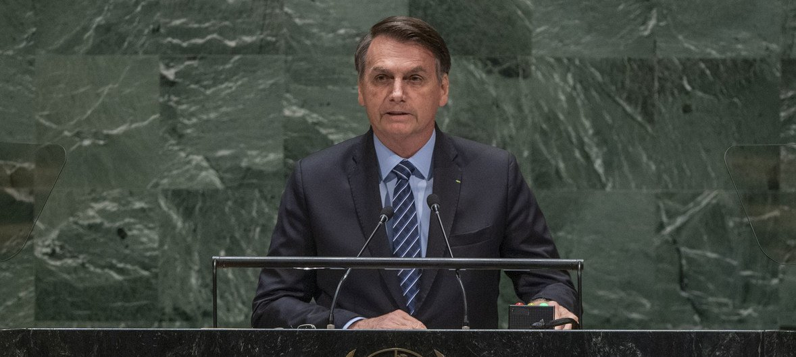
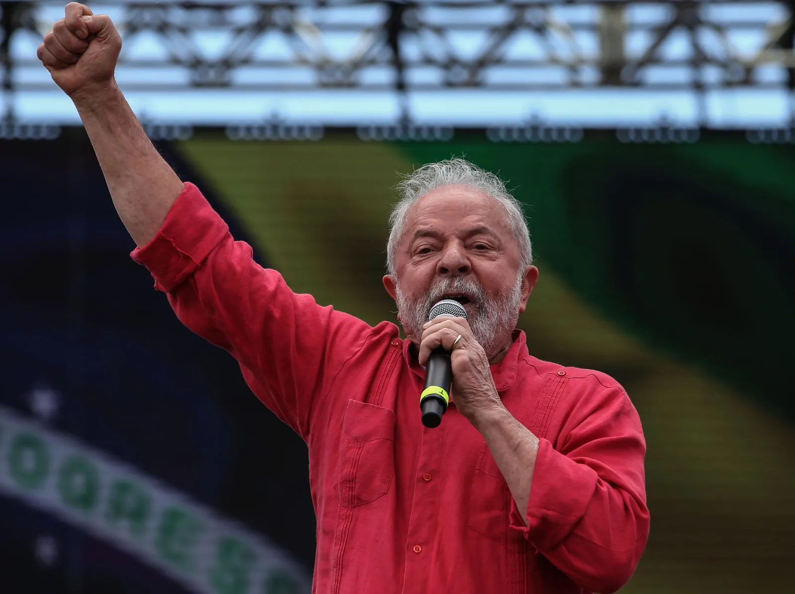
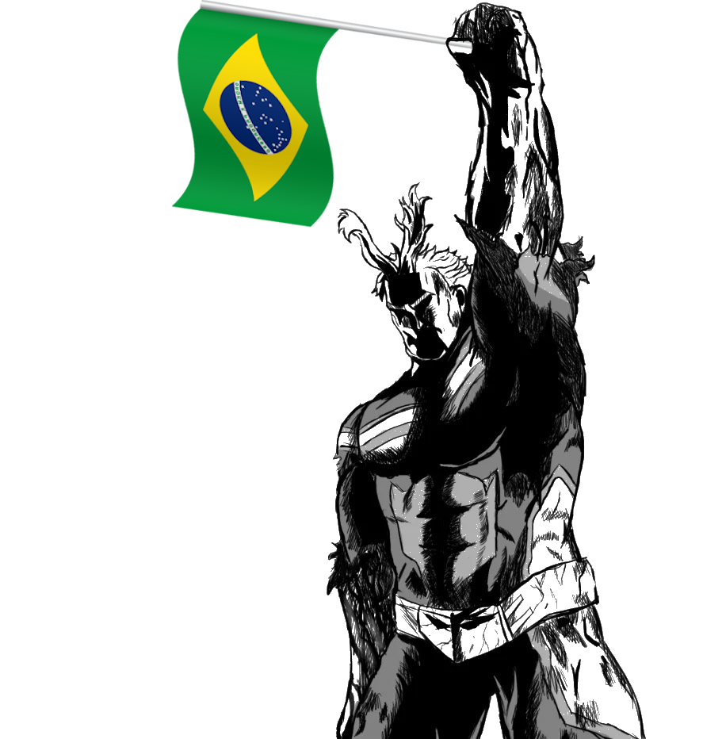
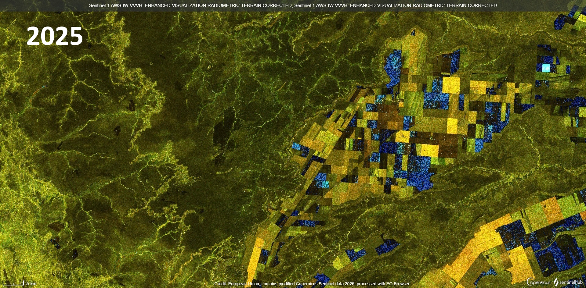
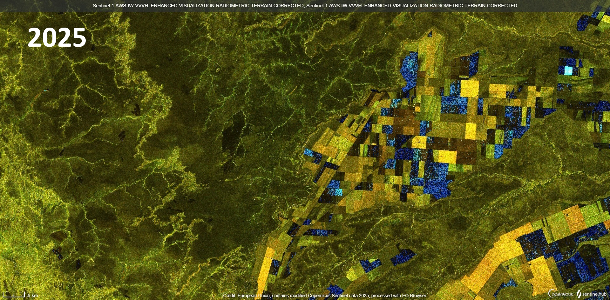

AMAZZONIA E IL MATOPIBA
AMAZON AND THE MATOPIBA
La deforestazione dell’Amazzonia è una delle emergenze ambientali più gravi degli ultimi decenni.
Ogni anno, milioni di ettari di foresta vengono distrutti per dare spazio a coltivazioni, pascoli e infrastrutture per la produzione di massa.
The deforestation of the Amazon is one of the most serious environmental emergencies of recent decades.
Each year, millions of hectares of forest are destroyed to make way for crops, pastures, and infrastructure for mass production.
Indice
Index
Il polmone verde
La foresta amazzonica è il più grande bioma tropicale del mondo e ospita migliaia di specie animali e vegetali.
Grazie ai processi della fotosintesi clorofilliana, contribuisce in modo fondamentale all’assorbimento del carbonio, al ciclo dell’acqua e al raffreddamento del clima terrestre.
Produttrice del 16% dell'ossigeno mondiale, viene definita il polmone verde del pianeta.
Tuttavia, la crescente pressione economica ha trasformato questa risorsa vitale in un’area a rischio costante.
Vediamo quindi di scoprire insieme come si è sviluppata la situazione negli ultimi 10 anni.
The Green Lung
The Amazon rainforest is the largest tropical biome in the world and is home to thousands of animal and plant species.
Thanks to the process of photosynthesis, it plays a fundamental role in carbon absorption, the water cycle, and the cooling of the Earth’s climate.
Producing 16% of the world’s oxygen, it is known as the planet’s green lung.
However, increasing economic pressure has turned this vital resource into an area under constant threat.
So let’s take a look at how the situation has developed over the past 10 years.
MATOPIBA: Il centro del bersaglio
Il territorio maggiormente colpito dalla piaga della deforestazione è proprio la MATOPIBA, una regione agricola del Brasile, dove l’espansione di coltivazioni come soia e mais ha sostituito la vegetazione nativa, mettendo in crisi interi ecosistemi.
Essa comprende i quattro stati di Maranhão, Piauí, Bahia e Tocantins .
Quest'ultimo in particolare occupa una posizione chiave, trovandosi all'interstizio tra la foresta amazzonica e il cerrado, rendendolo così un punto strategico per la conservazione ambientale, ma anche particolarmente vulnerabile.
L'agrobusiness ha favorito un’intensa deforestazione, frammentando gli habitat naturali, alterando il ciclo dell’acqua e aumentando il rischio di incendi e siccità.
Interi territori sono stati disboscati per far posto a nuove coltivazioni, in un processo che avanza rapidamente.
Così, da oltre 10 anni, il pezzo di foresta Amazzonica del Tocantins è divenuto nel tempo una delle aree più devastate da questo apparentemente insormontabile fenomeno.
MATOPIBA: The Target Center
The area most affected by the plague of deforestation is indeed MATOPIBA, an agricultural region of Brazil, where the expansion of crops like soy and corn has replaced native vegetation, disrupting entire ecosystems.
It includes the four states of Maranhão, Piauí, Bahia, and Tocantins.
Tocantins, in particular, occupies a key position, lying at the intersection between the Amazon rainforest and the cerrado, making it a strategic point for environmental conservation but also particularly vulnerable.
The agribusiness has fostered intense deforestation, fragmenting natural habitats, altering the water cycle, and increasing the risk of fires and droughts.
Entire territories have been cleared to make room for new crops, in a rapidly advancing process.
Thus, for over 10 years, the piece of Amazon forest in Tocantins has become one of the most devastated areas by this seemingly insurmountable phenomenon.
Amazzonia in fiamme
Tra le conseguenze più gravi della deforestazione che colpisce la regione vi sono gli incendi, sempre più frequenti e devastanti.
Spesso vengono appiccati volontariamente per liberare i terreni da destinare all’agricoltura o al pascolo, ma finiscono per sfuggire al controllo, distruggendo migliaia di ettari di foresta.
Oltre a compromettere la biodiversità, gli incendi rilasciano grandi quantità di CO₂, contribuendo al cambiamento climatico globale.
In una zona già fragile come quella del Tocantins, questi roghi accentuano la siccità, impoveriscono il suolo e rompono il delicato equilibrio del ciclo dell’acqua.
Il legame tra deforestazione e incendi è diretto e drammatico, e rende ancora più urgente la protezione di queste aree chiave per il futuro del pianeta.
Amazon on Fire
Among the most severe consequences of deforestation in the region are the fires, which are becoming more frequent and devastating.
They are often deliberately set to clear land for agriculture or pasture, but they end up getting out of control, destroying thousands of hectares of forest.
In addition to compromising biodiversity, the fires release large amounts of CO₂, contributing to global climate change.
In a fragile area like Tocantins, these blazes exacerbate drought, degrade the soil, and disrupt the delicate balance of the water cycle.
The link between deforestation and fires is direct and dramatic, making the protection of these key areas even more urgent for the planet’s future.
I soldi prima dell'ambiente
A peggiorare la situazione della deforestazione e degli incendi in Amazzonia ha contribuito anche l’approccio politico adottato dal presidente Jair Bolsonaro durante il suo mandato.

Eletto nel 2019, egli ha promosso politiche favorevoli allo sfruttamento economico della foresta, riducendo i controlli ambientali e indebolendo le agenzie preposte alla tutela del territorio.
Questa linea permissiva ha incoraggiato il disboscamento illegale e l'espansione dell'agrobusiness. La mancata sorveglianza ha facilitato inoltre l’aumento degli incendi dolosi, spesso ignorati o minimizzati dalle autorità.
Le sue scelte hanno attirato critiche sia a livello nazionale che internazionale, evidenziando quanto le decisioni politiche possano influenzare direttamente la salute dell’Amazzonia e del clima globale.
Money Before the Environment
The situation of deforestation and fires in the Amazon has been worsened by the political approach adopted by President Jair Bolsonaro during his term.
Elected in 2019, he promoted policies that favored the economic exploitation of the forest, reducing environmental controls and weakening agencies responsible for territorial protection.
This permissive approach encouraged illegal logging and the expansion of agribusiness. The lack of oversight also facilitated the increase in arson fires, often ignored or minimized by authorities.
His decisions have attracted criticism both nationally and internationally, highlighting how political choices can directly affect the health of the Amazon and global climate.
La lotta contro la deforestazione
Negli ultimi anni, in risposta ai danni provocati dalla deforestazione e dalle politiche permissive del passato, sono stati adottati diversi metodi per prevenire e contrastare la distruzione dell’Amazzonia.
Tra questi vi sono l’istituzione di nuove aree protette, il rafforzamento dei controlli ambientali, l’impiego di tecnologie satellitari per monitorare il disboscamento e campagne di sensibilizzazione sia in Brasile che all’estero.
Un ruolo decisivo in questo cambio di rotta è stato assunto dal presidente Luiz Inácio Lula da Silva, successore di Jair Bolsonaro, tornato al potere con l’obiettivo dichiarato di difendere l’ambiente.
|  |  |
Lula ha promesso una gestione più sostenibile della foresta e ha rilanciato la cooperazione con le popolazioni indigene e le ONG ambientaliste.
Sotto la sua guida, si è registrata una maggiore attenzione alla tutela di aree vulnerabili come il Tocantins, con l’intento di invertire la rotta e garantire un futuro più verde per l’Amazzonia.
The Fight Against Deforestation
In recent years, in response to the damage caused by deforestation and the permissive policies of the past, several methods have been adopted to prevent and counter the destruction of the Amazon.
These include the establishment of new protected areas, strengthening environmental controls, using satellite technologies to monitor deforestation, and awareness campaigns both in Brazil and abroad.
A key role in this change of direction has been played by President Luiz Inácio Lula da Silva, successor to Jair Bolsonaro, who returned to power with the declared goal of defending the environment.
Lula has promised a more sustainable management of the forest and has renewed cooperation with indigenous populations and environmental NGOs.
Under his leadership, there has been greater focus on protecting vulnerable areas like Tocantins, with the aim of reversing the trend and ensuring a greener future for the Amazon.
Tocantins 2015 vs 2025
Grazie alla tecnologia fornita dal satellite Sentinel-1, operativo dal 2014, è possibile osservare il cambiamento del terreno del Tocantins nel corso degli ultimi 10 anni.
Le immagini vengono elaborate a falso colore con l'esposizione elevata sul verde, evidenziando così l'intensità di vegetazione presente nel terreno.
Thanks to the technology provided by the Sentinel-1 satellite, operational since 2014, it is possible to observe the land changes in Tocantins over the past 10 years.
The images are processed in false color with high exposure to green, thus highlighting the intensity of vegetation present in the land.
.png) 

Come è possibile osservare, a distanza di 10 anni la foresta ha subito gravi danni e i risultanti sono lampanti.
As can be observed, after 10 years the forest has suffered severe damage, and the results are glaring.